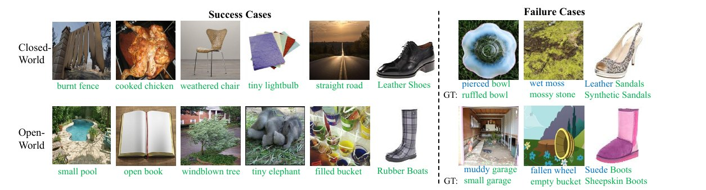

Compositional Zero-Shot Learning (CZSL) aims to recognize novel concepts formed by known states and objects during training. Existing methods either learn the combined state-object representation, challenging the generalization of unseen compositions, or design two classifiers to identify state and object separately from image features, ignoring the intrinsic relationship between them. To jointly eliminate the above issues and construct a more robust CZSL system, we propose a novel framework termed Decomposed Fusion with Soft Prompt (DFSP), by involving vision-language models (VLMs) for unseen composition recognition. Specifically, DFSP constructs a vector combination of learnable soft prompts with state and object to establish the joint representation of them. In addition, a cross-modal decomposed fusion module is designed between the language and image branches, which decomposes state and object among language features instead of image features. Notably, being fused with the decomposed features, the image features can be more expressive for learning the relationship with states and objects, respectively, to improve the response of unseen compositions in the pair space, hence narrowing the domain gap between seen and unseen sets. Experimental results on three challenging benchmarks demonstrate that our approach significantly outperforms other state-of-the-art methods by large margins.
Decomposed Soft Prompt Guided Fusion Enhancing for Compositional Zero-Shot Learning
1Department of Computing, The Hong Kong Polytechnic University
2The Hong Kong Polytechnic University Shenzhen Research Institute

Abstract
Highlights
Method
Soft Prompt Module
DFSP learns a full soft prompt over prefix, state, and object tokens, adapting CLIP to CZSL while preserving the joint representation of primitive concepts.
Decomposed Fusion
Instead of decomposing image features directly, DFSP decomposes language features into state and object features, then uses cross-modal attention to fuse them with visual features.
Seen-Unseen Balance
By letting the image feature respond separately to state and object concepts, the model reduces seen-composition bias and improves unseen-composition sensitivity.

Closed-World Results
| Method | MIT-States | UT-Zappos | C-GQA | |||||||||
|---|---|---|---|---|---|---|---|---|---|---|---|---|
| S | U | H | AUC | S | U | H | AUC | S | U | H | AUC | |
| AoP | 14.3 | 17.4 | 9.9 | 1.6 | 59.8 | 54.2 | 40.8 | 25.9 | 17.0 | 5.6 | 5.9 | 0.7 |
| LE+ | 15.0 | 20.1 | 10.7 | 2.0 | 53.0 | 61.9 | 41.0 | 25.7 | 18.1 | 5.6 | 6.1 | 0.8 |
| TMN | 20.2 | 20.1 | 13.0 | 2.9 | 58.7 | 60.0 | 45.0 | 29.3 | 23.1 | 6.5 | 7.5 | 1.1 |
| SymNet | 24.2 | 25.2 | 16.1 | 3.0 | 49.8 | 57.4 | 40.4 | 23.4 | 26.8 | 10.3 | 11.0 | 2.1 |
| CompCos | 25.3 | 24.6 | 16.4 | 4.5 | 59.8 | 62.5 | 43.1 | 28.1 | 28.1 | 11.2 | 12.4 | 2.6 |
| CGE | 28.7 | 25.3 | 17.2 | 5.1 | 56.8 | 63.6 | 41.2 | 26.4 | 28.7 | 25.3 | 17.2 | 5.1 |
| Co-CGE | 31.1 | 5.8 | 6.4 | 1.1 | 62.0 | 44.3 | 40.3 | 23.1 | 32.1 | 2.0 | 3.4 | 0.5 |
| SCEN | 29.9 | 25.2 | 18.4 | 5.3 | 63.5 | 63.1 | 47.8 | 32.0 | 28.9 | 25.4 | 17.5 | 5.5 |
| CSP | 46.6 | 49.9 | 36.3 | 19.4 | 64.2 | 66.2 | 46.6 | 33.0 | 28.8 | 26.8 | 20.5 | 6.2 |
| DFSP(i2t) | 47.4 | 52.4 | 37.2 | 20.7 | 64.2 | 66.4 | 45.1 | 32.1 | 35.6 | 29.3 | 24.3 | 8.7 |
| DFSP(BiF) | 47.1 | 52.8 | 37.7 | 20.8 | 63.3 | 69.2 | 47.1 | 33.5 | 36.5 | 32.0 | 26.2 | 9.9 |
| DFSP(t2i) | 46.9 | 52.0 | 37.3 | 20.6 | 66.7 | 71.7 | 47.2 | 36.0 | 38.2 | 32.0 | 27.1 | 10.5 |
S and U are seen/unseen accuracies, H is the harmonic mean, and AUC is the seen-unseen curve area. DFSP improves C-GQA AUC by +4.3 over CSP in the closed-world setting.
Open-World Results
| Method | MIT-States | UT-Zappos | C-GQA | |||||||||
|---|---|---|---|---|---|---|---|---|---|---|---|---|
| S | U | H | AUC | S | U | H | AUC | S | U | H | AUC | |
| AoP | 16.6 | 5.7 | 4.7 | 0.7 | 50.9 | 34.2 | 29.4 | 13.7 | - | - | - | - |
| LE+ | 14.2 | 2.5 | 2.7 | 0.3 | 60.4 | 36.5 | 30.5 | 16.3 | 19.2 | 0.7 | 1.0 | 0.08 |
| TMN | 12.6 | 0.9 | 1.2 | 0.1 | 55.9 | 18.1 | 21.7 | 8.4 | - | - | - | - |
| SymNet | 21.4 | 7.0 | 5.8 | 0.8 | 53.3 | 44.6 | 34.5 | 18.5 | 26.7 | 2.2 | 3.3 | 0.43 |
| CompCos | 25.4 | 10.0 | 8.9 | 1.6 | 59.3 | 46.8 | 36.9 | 21.3 | - | - | - | - |
| CGE | 32.4 | 5.1 | 6.0 | 1.0 | 61.7 | 47.7 | 39.0 | 23.1 | 32.7 | 1.8 | 2.9 | 0.47 |
| Co-CGE Closed | 31.1 | 5.8 | 6.4 | 1.1 | 62.0 | 44.3 | 40.3 | 23.1 | 32.1 | 2.0 | 3.4 | 0.53 |
| Co-CGE Open | 30.3 | 11.2 | 10.7 | 2.3 | 61.2 | 45.8 | 40.8 | 23.3 | 32.1 | 3.0 | 4.8 | 0.78 |
| KG-SP | 28.4 | 7.5 | 7.4 | 1.3 | 61.8 | 52.1 | 42.3 | 26.5 | 31.5 | 2.9 | 4.7 | 0.78 |
| CSP | 46.3 | 15.7 | 17.4 | 5.7 | 64.1 | 44.1 | 38.9 | 22.7 | 28.7 | 5.2 | 6.9 | 1.20 |
| DFSP(i2t) | 47.2 | 18.2 | 19.1 | 6.7 | 64.3 | 53.8 | 41.2 | 26.4 | 35.6 | 6.5 | 9.0 | 1.95 |
| DFSP(BiF) | 47.1 | 18.1 | 19.2 | 6.7 | 63.5 | 57.2 | 42.7 | 27.6 | 36.4 | 7.6 | 10.6 | 2.39 |
| DFSP(t2i) | 47.5 | 18.5 | 19.3 | 6.8 | 66.8 | 60.0 | 44.0 | 30.3 | 38.3 | 7.2 | 10.4 | 2.40 |
In open-world inference, DFSP uses the same post-training feasibility calibration protocol as prior work. DFSP(t2i) improves UT-Zappos AUC by +3.8 over KG-SP and improves unseen accuracy by +15.9 over CSP.
Ablation Study
| Setting | Method | MIT-States | UT-Zappos | ||||||
|---|---|---|---|---|---|---|---|---|---|
| S | U | H | AUC | S | U | H | AUC | ||
| Closed-world | SPM | 45.8 | 50.2 | 35.8 | 19.1 | 64.6 | 63.9 | 47.0 | 33.1 |
| Closed-world | +SA | 47.6 | 51.9 | 37.4 | 20.6 | 65.3 | 66.2 | 46.6 | 32.6 |
| Closed-world | +Fusion | 46.9 | 47.5 | 34.9 | 18.3 | 62.9 | 41.4 | 38.0 | 21.4 |
| Closed-world | +DeC | 48.3 | 51.3 | 37.3 | 20.7 | 62.3 | 70.7 | 46.8 | 33.5 |
| Closed-world | +DFM | 46.9 | 52.0 | 37.3 | 20.6 | 66.7 | 71.7 | 47.2 | 36.0 |
| Open-world | SPM | 45.8 | 16.7 | 18.3 | 6.1 | 64.6 | 44.6 | 40.8 | 23.5 |
| Open-world | +SA | 47.6 | 17.6 | 19.0 | 6.6 | 65.4 | 54.6 | 43.0 | 26.9 |
| Open-world | +DeC | 47.4 | 17.7 | 19.3 | 6.6 | 61.7 | 57.1 | 42.3 | 26.4 |
| Open-world | +DFM | 47.5 | 18.5 | 19.3 | 6.8 | 66.8 | 60.0 | 44.0 | 30.3 |
SPM is the soft-prompt baseline. SA adds self-attention, Fusion uses fusion without decomposition, DeC uses decomposition alone, and DFM combines decomposition with cross-modal fusion.
Qualitative Analysis

Why It Works
Language is easier to decompose
State and object are strongly entangled in image features, while a text prompt keeps them as separate lexical units. DFSP therefore decomposes the language feature instead of forcing direct visual disentanglement.
DFM changes the pair space
With DFM, matching is no longer only language versus image. The pair space becomes language plus image-context on one side and decomposed state/object plus image on the other side.
Unseen response improves
Fusing decomposed state and object features into the image branch helps the visual feature respond separately to each primitive concept, reducing over-reliance on seen pairs.
t2i is the strongest variant
Across closed-world and open-world experiments, t2i is the most robust direction because it enriches the image branch while preserving the joint representation in the language branch.
Experimental Setup
Datasets
- MIT-States: 53,753 images, 115 states, 245 objects; closed-world search over 1,262 seen compositions and held-out unseen compositions.
- UT-Zappos: 50,025 shoe images, 16 states, 12 objects; closed-world evaluation follows the standard split.
- C-GQA: 39,298 images with 453 states, 870 objects, and more than 9,500 compositions.
- Open-world: evaluates over all feasible state-object combinations, with 28,175 / 192 / 278,362 compositions for MIT-States, UT-Zappos, and C-GQA respectively.
Training and Metrics
- Backbone: pretrained CLIP ViT-L/14 image and text encoders.
- Optimizer: Adam; training for 20 epochs.
- Hardware: one NVIDIA RTX 3090 GPU.
- Metrics: seen accuracy (S), unseen accuracy (U), harmonic mean (H), and AUC over the seen-unseen trade-off curve.
BibTeX
@inproceedings{lu2023dfsp,
title={Decomposed Soft Prompt Guided Fusion Enhancing for Compositional Zero-Shot Learning},
author={Lu, Xiaocheng and Guo, Song and Liu, Ziming and Guo, Jingcai},
booktitle={Proceedings of the IEEE/CVF Conference on Computer Vision and Pattern Recognition},
pages={23560--23569},
year={2023}
}